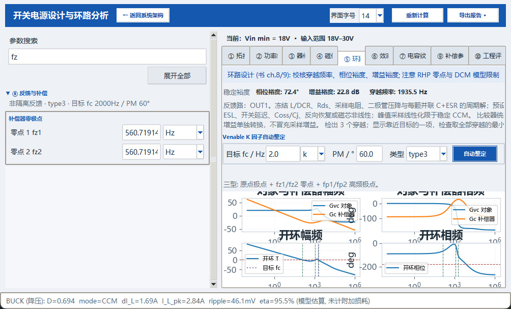
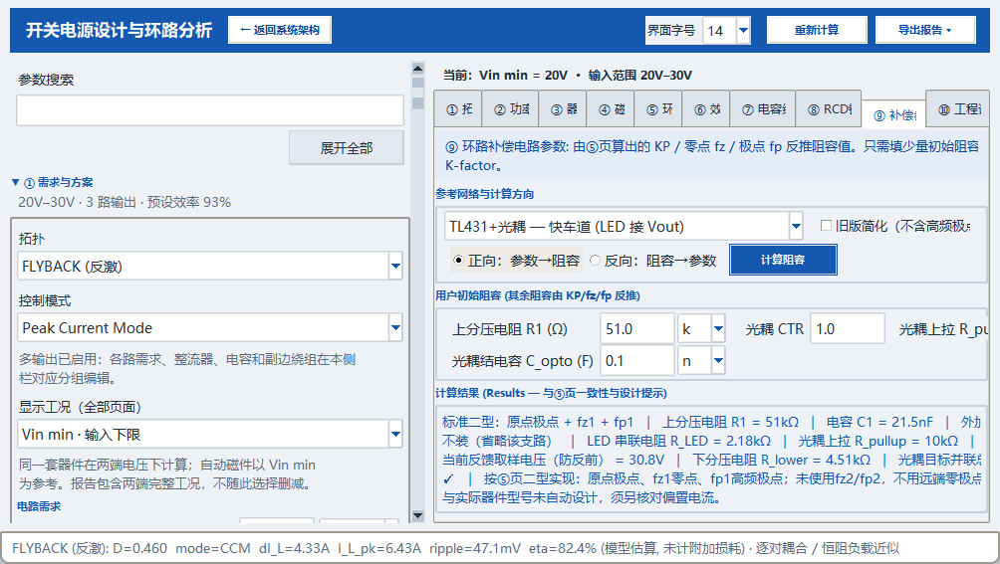

08 检查小信号环路并换算补偿网络
环路页用当前功率级与控制方式计算反馈回路。自动整定得到候选零极点，补偿参数页把它们换算成指定电路中的 R、C。
开关电源单元 → 左侧“⑥ 电流采样与调制”“⑧ 反馈与补偿” → 右侧“⑥ 环路”“⑩ 补偿参数”。
操作步骤
- 确认环路使用的模型 先得到有效工作点，选定反馈路和端点。SSR 隔离多路从所选主反馈路取样。PSR-MP6005 使用其专用的辅助绕组与 COMP 参数，按界面提示核对覆盖范围。
- 设置整定目标 在“Venable K 因子自动整定”填“目标穿越频率 / Hz”和“整定目标 PM / °”，选 auto、type2 或 type3 后点“自动整定”。选值需考虑开关频率、延时、对象的右半平面零点和硬件带宽。
- 查看开环和各路响应 检查开环在 0 dB 附近的穿越与相位，核对实际显示的 fc、相位裕度 PM 和增益裕度 GM。切换输入端点时沿用同一套补偿。耦合反激如提供“各路响应”，可选负载扰动注入端口并检查响应幅值。
- 由零极点得到元件值 在“⑩ 补偿参数”选补偿网络与“正向：参数→阻容”，填写初始分压或 LED 支路参数，再点“计算阻容”。上方文字区列出阻容、回代校验及设计提示，可独立滚动。下方电路图可缩放，拖动中间分隔条可调整图和参数区的高度。
- 用标准值或实测值复算 若已有实物阻容，选“反向：阻容→参数”，填全部对应值，点“反推并写入环路页”。再看两端输入下的实际环路，并用适用的仿真或实测证据对照。

目标频率和裕度填写在整定区。计算所得的相位、增益裕度与穿越频率以图上方读数为准。

将输入框的位号与图上的元件一一对应。对照正向或反向计算方向，记录回代结果和实际采用的阻容。
输入字段
| 字段或选项 | 单位或取值 | 输入的含义及用途 |
|---|---|---|
| 采样电阻 Rsense、采样放大增益 Asense | Ω、倍 | 实际电流检测路径。这两项影响峰值电流调制的增益，采样电阻还涉及自身的损耗。 |
| 调制斜坡幅值 Vm、输入电流等效斜坡 ma | V、A/s，按界面倍率 | 按所选控制模型填写锯齿波幅度或等效电流斜坡。峰值电流模式要复核斜坡补偿。 |
| 整定 fc、PM、类型 | Hz、°、auto/type2/type3 | 指定整定目标及补偿结构。验收取全部有效穿越中的最小相位裕度，须严格大于 45°。 |
| KP、fz1/fz2、fp1/fp2 | 按补偿模型、Hz | 补偿模型的增益和零点、极点频率。二型使用一个有限零点、一个有限高频极点和积分极点。三型加入第二组有限零极点。 |
| 补偿网络和计算方向 | 选择 | 选普通运放、跨导运放或适配的 TL431 光耦网络，再决定正向求阻容还是反向回算。 |
| 上分压 R1、基准 Vref、光耦 CTR 和结电容 | Ω、V、无量纲、F | 随参考网络出现的初始量。CTR 是电流传输比，光耦参数按工作点及数据手册条件核对。 |
结果核对
整定条件不满足时先读失败原因。核对反馈路、峰值电流内环和目标穿越，原参数只在界面确认成功时被更新。
GM 未检出表示扫描内没有得到显示值。对照已计算频带、所有穿越及闭环检查，再决定是否增加验证。
各路响应为主反馈闭环下的局部小信号结果。大负载切换、启机保护和跨越导通模式的过程另用瞬态仿真。